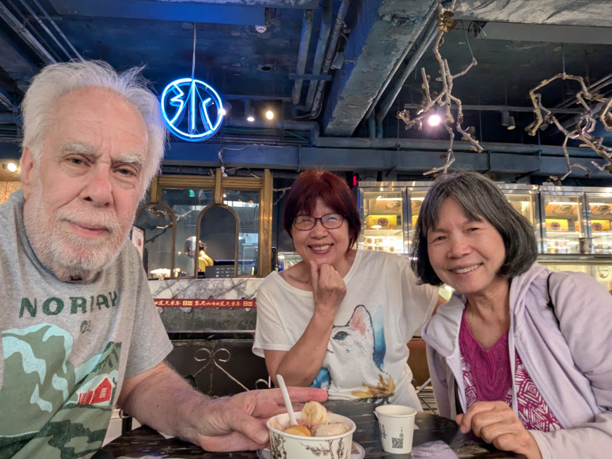
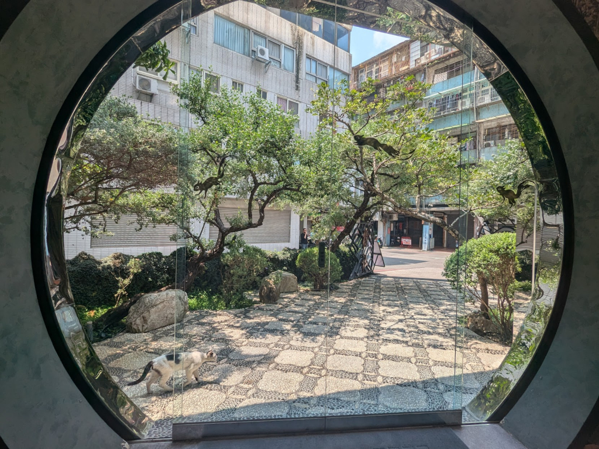
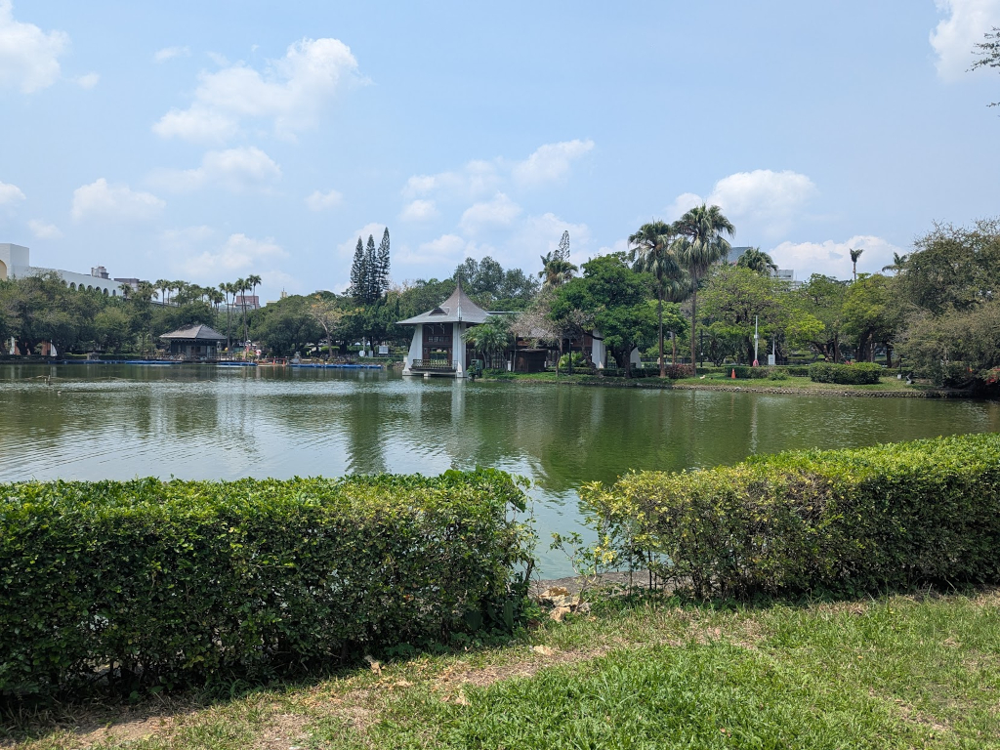
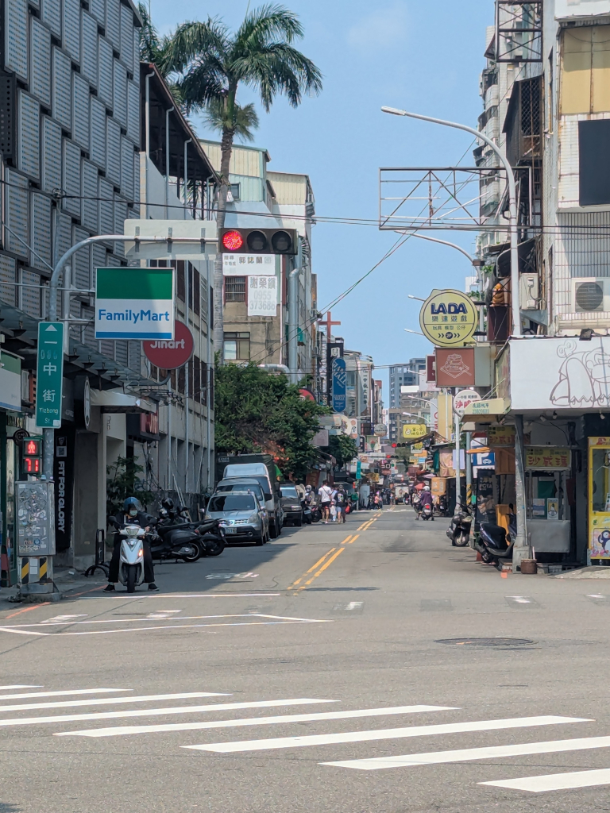
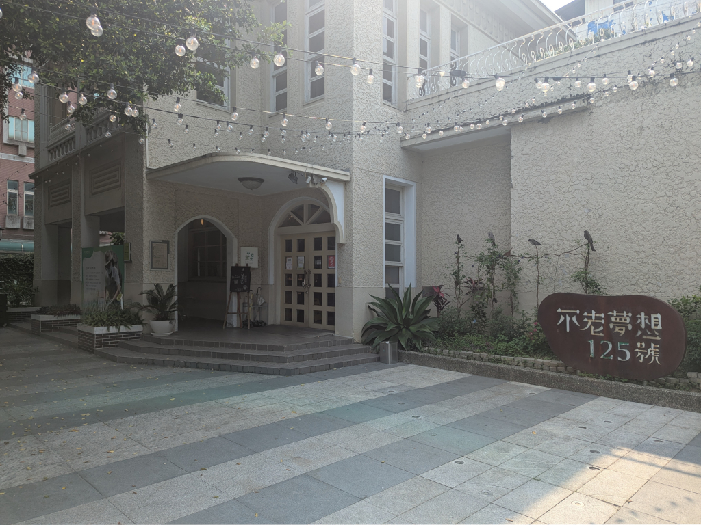
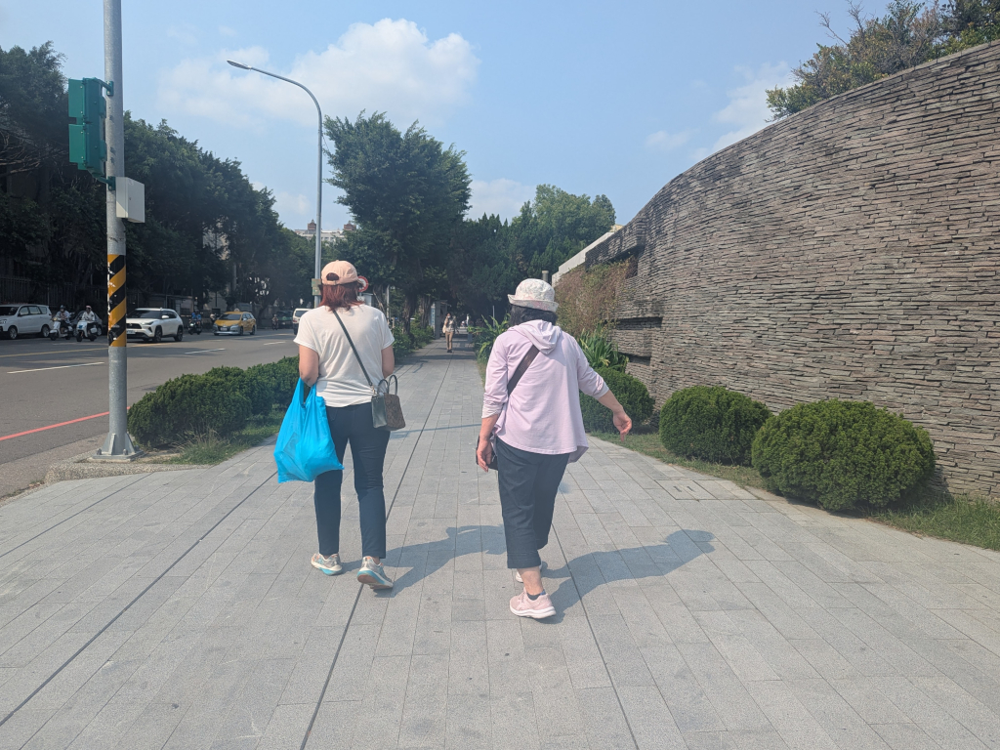
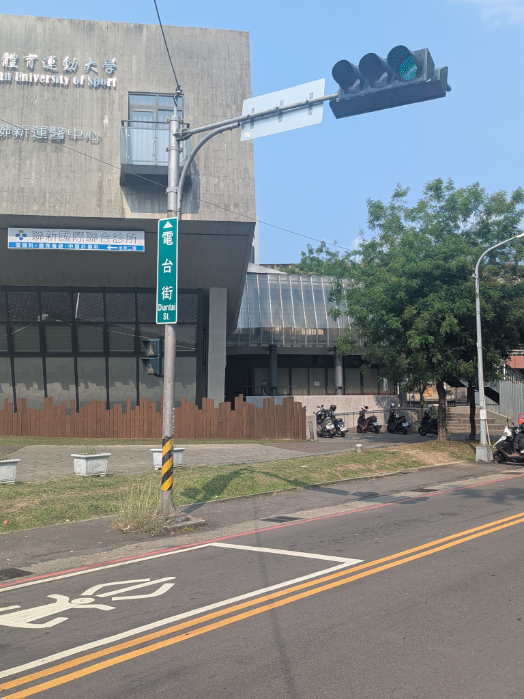
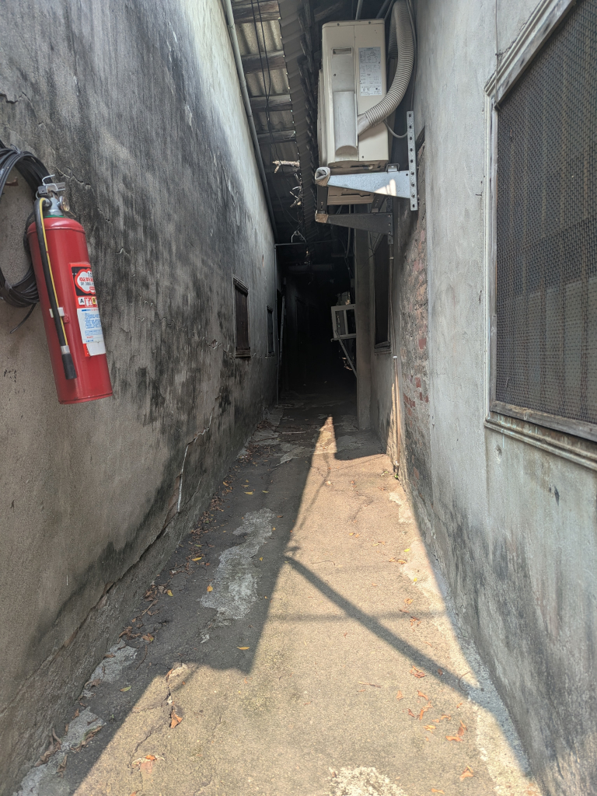

April 14, 2026
Back to Main
 ...Meihui, who's a regular there, could have brunch. She only ate one of her two sandwiches which came as a special, saving the other for later. (NT$280 is about US$8.85.) Meanwhile, Mei-O and I shared some ice cream! They had so many flavors, it was hard to decide, but once we did, it was so good that we ordered another (the scoops were really small), this time with a cone-like wafernoteMeihui told us a bowl of ice cream came with sliced bananas and a small
鳳梨酥 (pineapple cake), so we ordered two scoops, and it was really good. When we ordered the second bowl, she asked if we wanted the
cone-like wafer, that it too was free and came with it if we wanted it, so we got that too. . It turned out to be a pretty
yummy brunch for us.
 We were headed for Taichung Park next, but Meihui, who loves coffee (and didn't have any when she had her brunch sandwich earlier), wanted to stop here at 櫟社, another of her favorite coffee shops. Once you passed through the main entranceway (above, taken from the inside looking out), you entered a beautiful courtyard leading to another circular entrance (the front door). She got her coffee and a few goodies to share with us. After sitting and talking a while, we made our way to... ...Taichung Park, a place both Mei-O and I have fond memories of. Here are a few pictures from our walk in the park. After leaving the park, we walked over to nearby 一中街 (Yizhong St.). Named after the nearby 台中一中, a senior high schoolnoteI just learned this today. I noticed the name of the high school as we walked past it, and commented to Mei-O
that that's probably why the street is called Yizhong St. (She, of course, already knew that and always assumed I knew that too.) ,
according to some, it's considered the most popular shopping area in Taichung. The street is lined on
both sides by stores and food stalls of all sorts as far as the eye can see, and is a popular hangout for the high school students after
school and on weekends and hosts a very busy night market. (It wasn't very crowded during our visit around 1:00 in the afternoon.) We were
there for a specific reason: 大雞排. A 大雞排 ("Giant Chicken Cutlet", from Google Translate) is just that, a giant flat piece of fried chicken
that I've been eating here for years. It was time for lunch, and I had my heart set on one, but when we got to the 大雞排 stall,
it was closed and wouldn't open until 3:00! We (I!) decided we'd come back later; I didn't
want to miss having a 大雞排!
 So we walked over to 不老125 ("Ever-young 125"), a Senior Citizen Center with a casual restaurant where Mei-O and I shared a nice simple 便當 for lunchnoteWe were still pretty full from our big breakfast and the ice cream we had earlier this morning. And I wanted to
save room for a 大雞排 later! . Meihui ordered a coffee from Louisa Coffee,
an "age-friendly store" which shared the building with 不老125, and finished her
leftover sandwich from this morning.
 We left the Senior Center walking up 雙十路, a road I've walked a thousand times in the past, headed for our next highly-anticipated destination. We passed the 國立臺灣體育運動大學 (National Taiwan University of Sport) Stadium, finally coming up on... ...電台街, the road that leads to Mei-O's old house, the house she was born in. The road use to be a small, junky road, but with the establishment of the University of Sport in the neighborhood, it's become quite different. We passed the old radio station buildingnoteThis is how the street got its name. 電台 means "radio station", hence,
電台街, Radio Station Rd. It hasn't been a radio station for years, and has, in the past, been a restaurant, among other things. The building and
its grounds often serve as a popular backdrop for wedding photos. and continued
down the road
(1:09) until...
 ...I was face-to-face with the narrow lane that led to the front gate and courtyard of Mei-O's old house. (It's all the way in and on the left.) I was about to go in to see what condition the place was innoteThe house has been abandoned for years, sitting empty. Mei-O's father had a
bunch of plants and trees in the courtyard, and over the years, every time we came to check the place out, I had seen how they had grown and taken
over the courtyard and even spread into the house. , when a neighbor shouted out not to, that it was full of fleas! So I didn't. Whew!
|
{kind=link}
{kind=link}
{kind=link}
{kind=link}
{kind=link}
{kind=link}
{kind=link}
{kind=link}
{kind=link}
{kind=link}
{kind=link}
{kind=link}
{kind=link}
{kind=link}
{kind=link}
{kind=link}
{kind=link}
{kind=link}
{kind=link}
{kind=link}
{kind=link}